重点
链表题目并不是算法设计题，而是很经典的Coding能力考察！
一般也是
填函数风格而不会是Acw
链表题的注意点
- 空间要求不严格 使用容器实现即可
- 空间要求严格 要求O(1)的空间复杂度
- 最常用技巧-快慢指针
- 本质不是算法设计能力而是coding能力
- 链表需要多多训练才可以！
提示
和链表相关的难题会在[拓展]约瑟夫环中涉及
经典题目
Question 1 两个链表相交的第一个节点
最直观的想法，使用Hashset遍历某一个链表一次，再遍历另一个链表一次，每次遍历都查询一次。
- 这需要额外的容器，如果要求严格的空间复杂度则不对
| 算法思路 | 解释 |
|---|---|
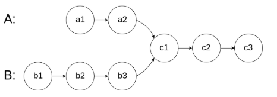 |
对于A B两个链表，若二者会相遇则必然最总会达到同一个节点，且我们发现 A 与 B的长度之差一定在第一次相遇之前故算法思路为 - 长链表 - 长度之差 并往下遍历，直到相同 |
Question 2 按组反转链表
这道题思路倒是不难，难的是Coding实现的细节，如果不考虑$O(1)$的时间可以使用一个数组存入在进行反转，但考虑$O(1)$即进行原地反转需要考虑的细节就很多了。
重要
这道题思路不难难点在于如何写出不含bug的代码
| 算法图解 | 解释 |
|---|---|
| 假设k=2 | |
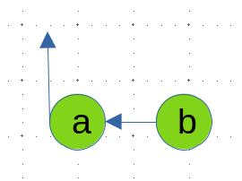 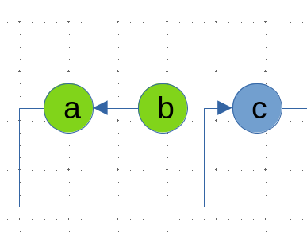 |
第一次操作的时候注意换头 两个一组，单独反转 |
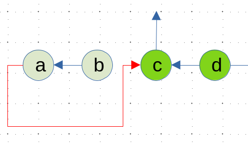 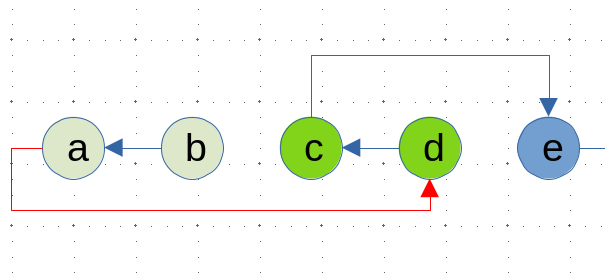 |
特别注意，这一条红色的线最终是要指向d |
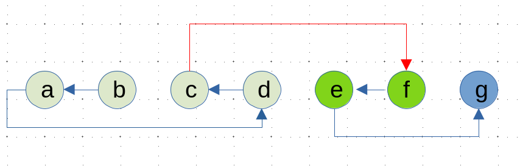 |
g 不足2不需要改变 |
Question 3 复制带随机指针的链表
这道题题意很简单，朴素思路也很简单。
-
使用
Hash存储拷贝节点和原节点的key-value关系，通过遍历原节点，查Hash的办法确定拷贝节点的next和random指针的目标 -
不是用额外空间就需要一点技巧
算法图解 讲解 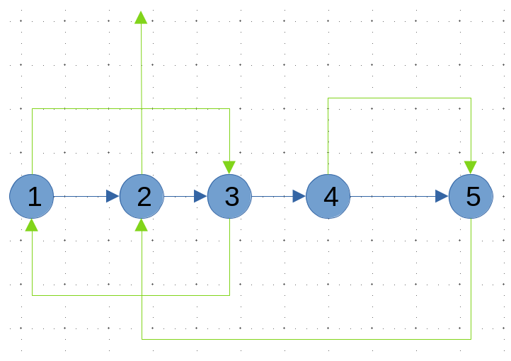
next指针为蓝色random指针为绿色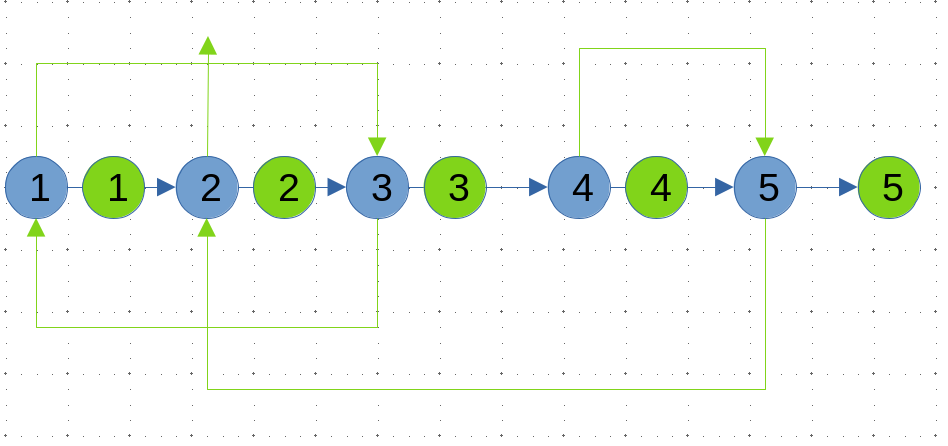
首先在每一个节点后面拷贝一个节点 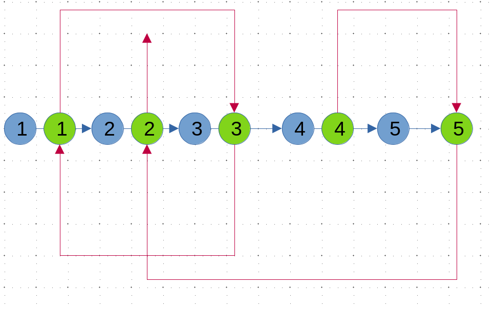
然后通过原来的节点的 random指针确定
拷贝节点的random指针copy->random = original->random->next
注意图中省去了原来的random指针，实际编码不可以改变分离链表即可
Question 4 判断链表是否存有回文结构
简单思路：使用栈$O(N)$ ,读入读出一次即可判断
进阶思路：使用快慢指针
- 求中点
- 逆序另一边的链表
- 判断是否相同
| 算法图解 | 解释 |
|---|---|
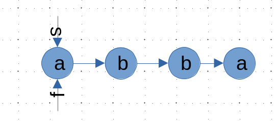 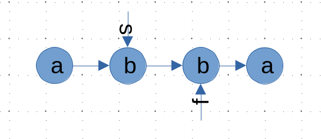 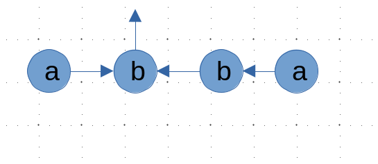 |
设置快慢双指针s表示满指针f表示快指针其中 s每次走一格,f每次走两格当 f为走不下去的时候s为中点反转另一半链表，逐个比较就可以判断是否回文 |
重要
这道题思路不难,难点在于如何写出不含bug的代码
Question 5 链表第一个入环节点
这是一道比较经典的快慢双指针问题($O(1)$时间复杂度的解法)
本质是一道数学题
| 算法图解 | 解释 |
|---|---|
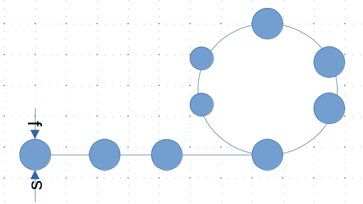 |
设置快慢双指针 快指针每次走两步 慢指针每次走一步数 |
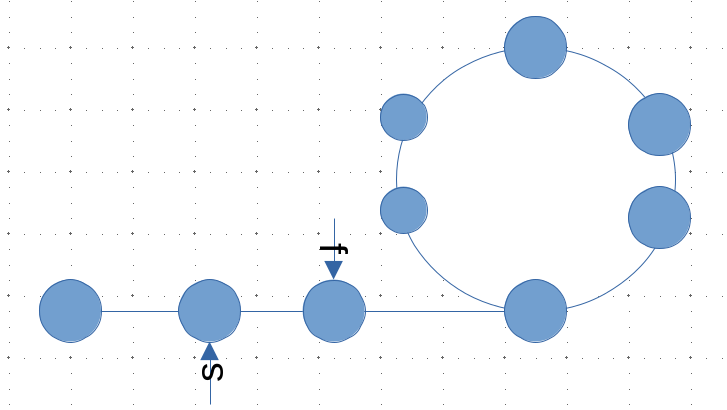 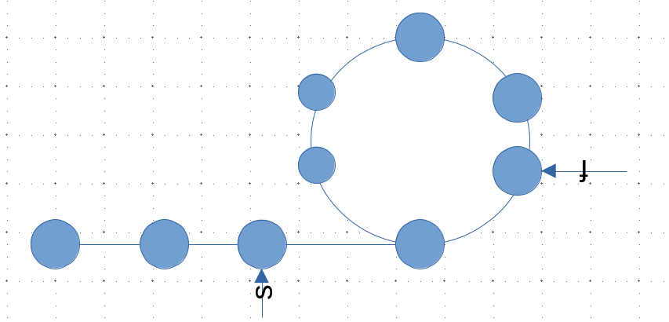 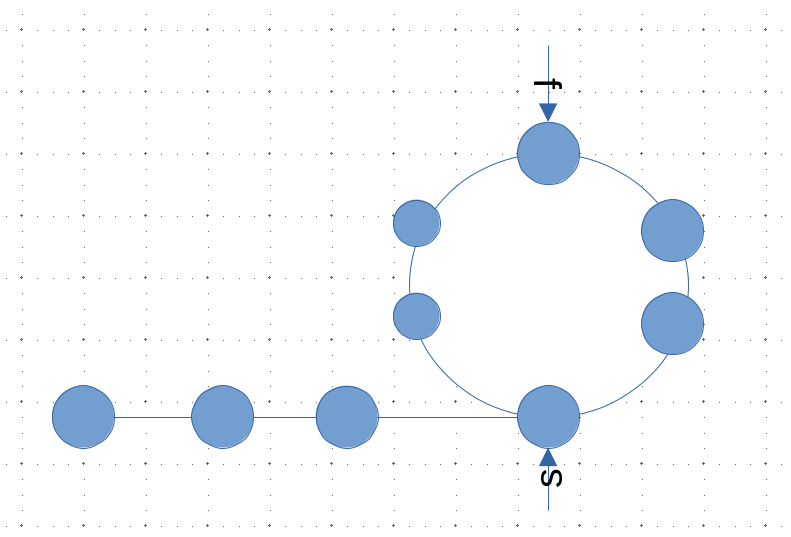 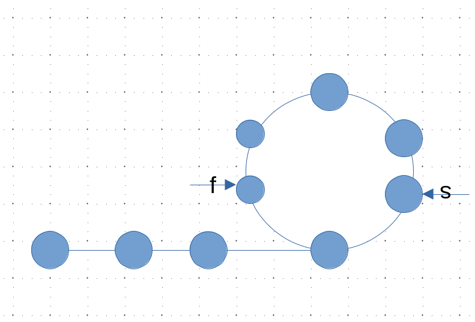 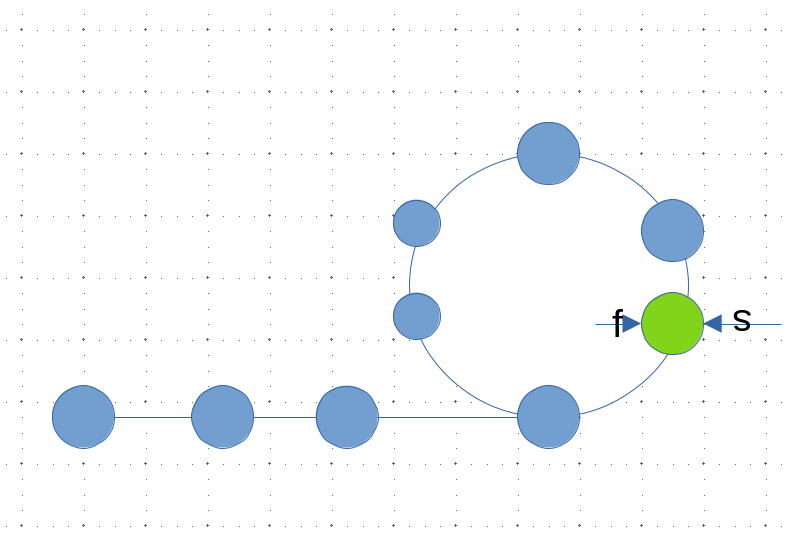 |
快慢指针必然会相遇 |
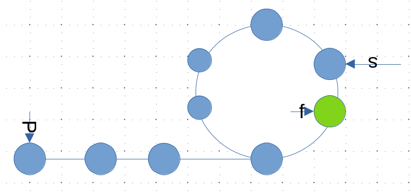 |
根据下方数学推到，从头节点和slow此后 slow和p每次向前一步，最终相遇的结点，比如是入环节点 |
数学推导

- 假设环外部分距离为
a,slow指针进入环后走了b与fast指针相遇 - 此时
fast指针走完了n圈环 fast走过的总距离为a+n(b+c)+b = a+(n+1)b+nc- 由于任意时刻
fast走过的距离一定为slow的两倍 - 则有
2a+2b = a+(n+1)b+nc即a=c+(n-1)(b+c)
Question 6 链表排序
测试链接leetcode 148链表排序
可以使用额外辅助空间的解法就很多了，比如使用递归版本的归并，甚至直接sort都可以，但是如果要求$O(1)$的常数空间并$O(n\log{n})$的时间复杂度并保证稳定性呢？
- 这个要求很明显只能用非递归版本的归并排序，具体算法图解看 1.2归并排序与归并分治
- 但由于是链表，些这段代码还是非常折磨的！